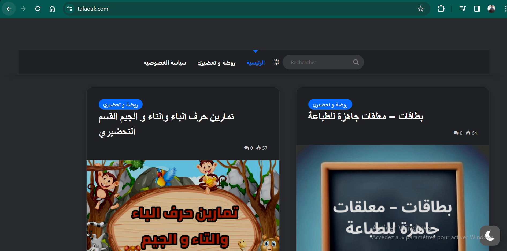

WordPress-Based E-Learning Platform
live demo https://tafaouk.com/ Overview: I have developed and manage a robust e-learning platform using WordPress, providing an accessible and engaging online learning environment for students of diverse backgrounds. This platform offers a wide range of courses and features designed to enhance the learning experience.
Key Features: Diverse Course Catalog: The platform hosts a comprehensive array of courses covering various subjects, from technical skills like programming to practical skills such as cooking and art. User-Friendly Interface: With a clean and intuitive interface, students can easily navigate the platform, access courses, and track their progress. Interactive Learning Materials: Courses include multimedia elements such as videos, quizzes, and downloadable resources, enriching the learning experience. Certification: Upon successful completion of courses, students receive certificates, adding value to their professional profiles. Mobile Compatibility: The platform is responsive and optimized for mobile devices, allowing students to learn on-the-go. Community Engagement: Integrated forums and discussion boards foster a sense of community among learners, encouraging collaboration and knowledge sharing. Technical Details: WordPress Framework: The platform is built entirely on WordPress, utilizing its flexibility and ease of use to create and manage content. Learning Management System (LMS): Integrated a robust LMS plugin, such as LearnPress or LearnDash, to facilitate course creation, student enrollment, and progress tracking. Customization: Utilized WordPress themes and customizations to tailor the platform's design and functionality to the needs of both students and instructors. Payment Integration: Implemented secure payment gateways like PayPal or Stripe to enable easy enrollment in premium courses. Impact: The platform has garnered positive feedback from users, with high engagement rates and completion rates for courses. It has provided a valuable resource for individuals seeking to upskill, advance their careers, or explore new interests from the comfort of their homes. Conclusion: This WordPress-based e-learning platform represents a culmination of my skills in web development, content management, and user experience design. It showcases my ability to create functional and user-centric digital solutions that contribute to the education and professional growth of a diverse online community.